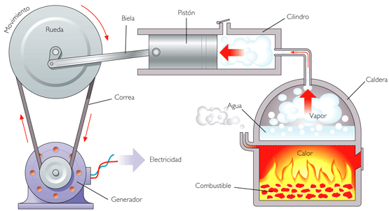
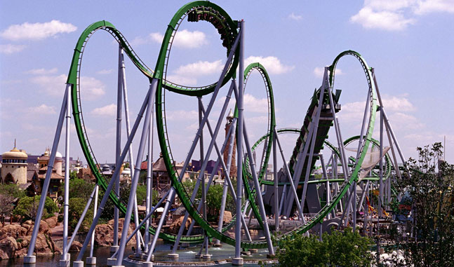
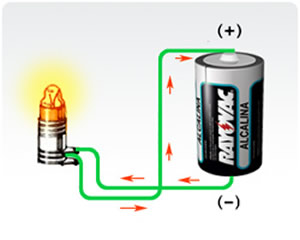

A energia elétrica também pode se transformar em outros tipos de energia ao chegar às residências ou em indústrias. Exemplos:
Modos de transformação da energia Eletrica:
Energia térmica: quando vamos passar roupas, a energia elétrica é transformada em energia térmica através do ferro de passar.

Energia sonora e energia luminosa: recebemos iluminação em casa pela transformação da energia elétrica que, ao passar por uma lâmpada, torna-se incandescente, e o televisor nos permite receber a energia sonora.
Energia mecânica: usada nas indústrias automobilísticas para trabalhos pesados, a energia mecânica é a combinação/soma da energia potencial ou gravitacional com a energia cinetica. É uma energia que pode ser transferida por meio de uma força

Energia potencial: é a energia que pode ser armazenada em um sistema físico e tem a capacidade de ser transformada em energia cinética. Conforme o corpo perde energia potencial ganha energia cinética ou vice-e-verso. Alguns exemplos para melhor entendimento seria na queda de objetos, no sistema solar, no balançar do pêndulo, no arremesso de dardos, ao pular, ou qualquer outra ação dependente da gravidade.
Energia química: A energia química é realmente uma forma de energia potencial microscópica, que existe por causa das forças eléctricos e magnéticos de atracção exercida entre as diferentes partes de cada molécula – as mesmas forças de atracção envolvidas em vibrações térmicas. Estas peças são reordenados em reações químicas, liberando ou adicionar a esta energia potencial.
